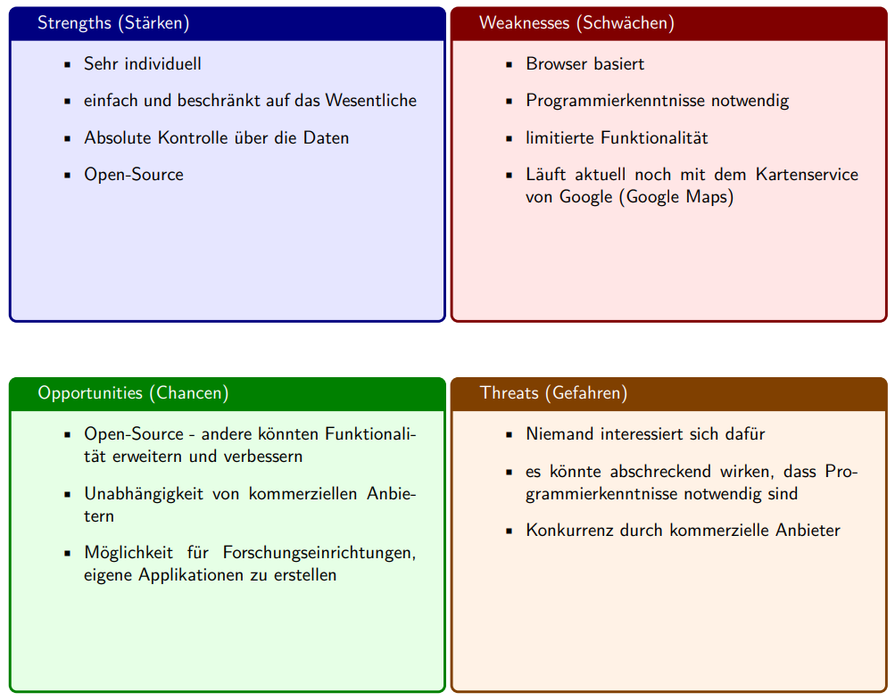

## Inhalt * Idee * Entstehung * Prototype --- ## Idee ---- Wie erheben wir Geodaten im Feld? ---- Wie könnten wir Geodaten im Feld erheben? ---- Geodaten Erhebung mit Smartphone App ### Was ist wichtig? ---- Einfachheit der App - nur das absolut nötigste ---- Datenhoheit - Die Daten sollen selbst verwaltet werden ---- Wiederverwendbarkeit - das Problem einmal lösen und immer wieder verwenden! ---- ### Unsere Lösung Ein open-source Bausatz, um genau das zu ermöglichen --- ## Entstehung ---- Swot Analyse  ---- Logo ---- Wieso auch lange planen, wenn man auch einfach machen kann? --- ## Prototype ---- QR Code um die App zu installieren <br> <img src="images/qr_code_app.png" style="width: 30%;"> ---- So schaut das aus <iframe src="https://wildtierapp.juliankraft.ch/app/" width="40%" height="500px"></iframe> ---- Die Daten sind auf einer Website einsehbar: https://wildtierapp.juliankraft.ch/ <iframe src="https://wildtierapp.juliankraft.ch/inframe" width="100%" height="500px"></iframe> --- ## So viel zu dem